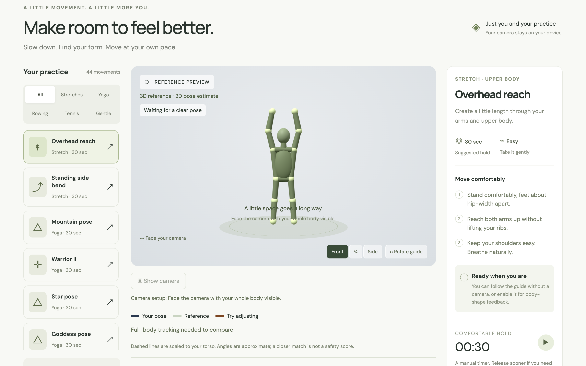
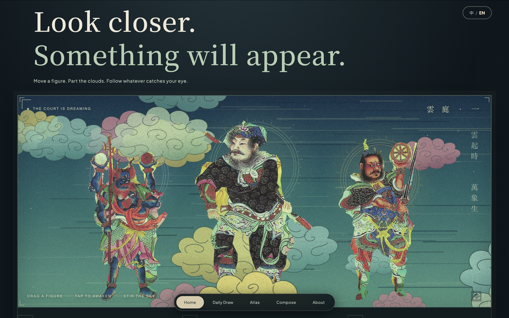
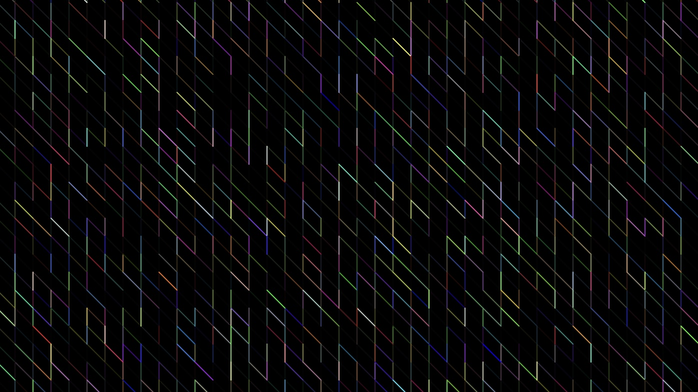

FitAI.Move with intention.
An illustrative two-oar sculling sequence from FitAI's 3D movement guide.
Explore the live project
An illustrative two-oar sculling sequence from FitAI's 3D movement guide.
Explore the live project
Painted guardians drift among living clouds. A small movement reveals another detail.
Explore the live artwork
Small steps take random turns, leaving colored trails that slowly fade—a drawing shaped by chance and time.
Explore the project
A fixed grid gives chance room to play: each cell chooses a diagonal line, a vertical line, or empty space. Random color turns repetition into rhythm.
Explore the projectLight, places, and the small details that make me pause. A collection of moments worth keeping.
Explore the photographsMandy Yi / athlete, maker, observer
A little focus. A little curiosity.
One thing leads to another.
It starts with
a little impact.